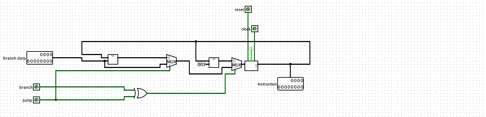
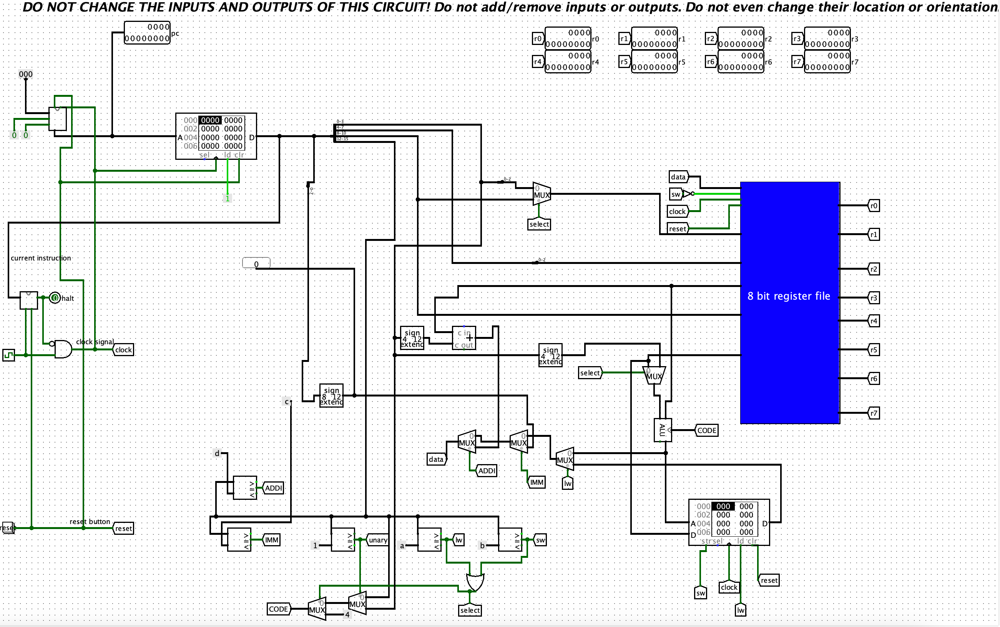

Dit verslag werd opgesteld door:
De oplossing bestaat uit de volgende bestanden (geef alle bestanden op):
Program Counter
Een Program Counter (PC) is een register in de processor van een computer dat het geheugenadres van de volgende instructie aangeeft die moet worden uitgevoerd. De Program Counter speelt een cruciale rol in het besturen van de uitvoeringsvolgorde van instructies binnen een programma. Om dit te bereiken maken we gebruik van ons 8-bit register, dat is uitgerust met een klok- en resetbit, om de waarde van de program counter op te slaan. Daarnaast ontvangt het register de branchwaarde als input, samen met nog twee andere invoerparameters die aangeven of de branch absoluut of relatief is. Als de branch relatief is, voegt de program counter de waarde van de branch toe aan de waarde in het register. Als de branch absoluut is, wordt de branchwaarde met 1 opgeteld en vervolgens opgeslagen in het register. Deze resulterende waarde, nu aangeduid als "Instruction Address," wordt vervolgens doorgegeven.
Datapath
Een datapad is een elektronisch circuit binnen een processor dat verantwoordelijk is voor het uitvoeren van gegevensbewerkingen. Het datapad bestaat uit verschillende functionele eenheden, zoals registers, ALU (Arithmetic Logic Unit), en verbindingen tussen deze eenheden. Het is ontworpen om gegevens te verplaatsen en te bewerken volgens de instructies van een programma. In wezen vertegenwoordigt het datapad het pad dat gegevens volgen terwijl ze door de processor reizen en worden verwerkt. Het omvat de hardware-implementatie van de rekenkundige en logische bewerkingen die nodig zijn voor instructies uit het programma.De eerste RAM dient voor het tijdelijk opslaan van instructies die de computer moet uitvoeren. De tweede RAM houdt de gegevens van het datapad vast. We splitsen de instructie om te achterhalen welke operatie moet worden uitgevoerd. Door de eerste 4 bits te vergelijken met een constante waarde, kunnen we bepalen of het gaat om een Unary of Binary operatie, een read word of een write word. Met behulp van deze inputs kunnen we het datapad sequentieel koppelen en de benodigde operaties uitvoeren.
De controle-eenheid vormt een essentieel onderdeel van de CPU. Het neemt de taken op zich van het decoderen van instructies, het beheren van de uitvoeringsvolgorde, het synchroniseren met de klok, het aansturen van het datapad voor bewerkingen, en het beheren van registers en geheugen. Deze coördinatie zorgt voor een georganiseerde en nauwkeurige uitvoering van instructies binnen de CPU. .
